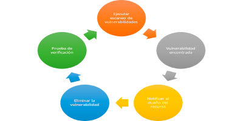

<div class="article-row-section text-center">
	<div class="article-row-section-inner">
		<h1 class="h1 article-row-section-header">Manejo de Vulnerabilidades</h1>
		<article class="article-row">
			<div class="article-row-img">
				</div>
			<div class="article-row-content">
				<p class="article-row-content-description text-left">La solución SECNAR para el manejo de vulnerabilidades ofrece un conjunto diverso de tecnologías que le permiten escanear fácilmente redes grandes en busca de vulnerabilidades y parches faltantes.

					Nuestra solución le proporciona diferentes tipos de tecnología para auditar su red y le permite adaptar su auditoría para diferentes partes de su red.</p>

				<p class="article-row-content-description text-left">Ya sea que elija realizar escaneos de red de toda su infraestructura, solo realice la auditoría de parches de servidores clave o. monitoree puramente en modo pasivo, nuestra solución incluye una interfaz de usuario consistente con filtrado avanzado, análisis y acceso basado en roles a los resultados de la auditoría.

					Nuestro servicio de manejo de vulnerabilidades está diseñada para permitirle importar listas de activos, así como asignar tipos de activos basados en las propiedades encontradas durante un análisis para facilitar el informe. Esto puede permitirle escanear, analizar e informar sobre ciertos tipos de activos que pueden estar agrupados por ubicaciones físicas.</p>

				<p class="article-row-content-description text-left">Con múltiples métodos para administrar las credenciales necesarias para auditar sistemas basado en Unix, Windows y dispositivos de red, las credenciales se pueden asociar con políticas de escaneo, plantillas de vulnerabilidad y activos específicos. Esto permite a los auditores concentrarse en realizar sus auditorías sin otorgarles derechos de administrador a sus sistemas clave.
				</p>
			</div>
		</article>
	</div>
</div>